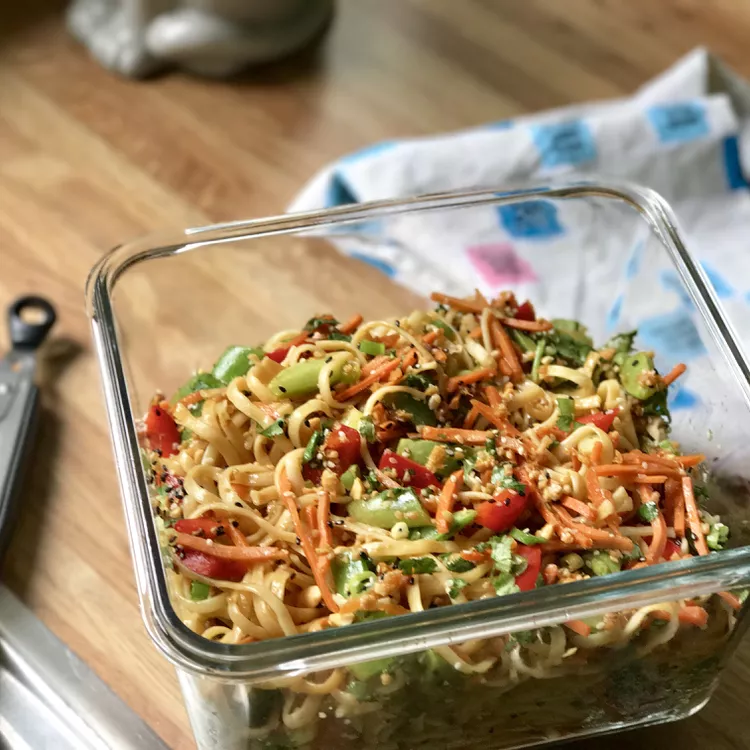

Sesame Noodles Recipe

This homemade sauce makes a sweet and spicy foil for linguine. The best sesame noodles I have every had!
Ingridients
- 1 (16 ounce) package linguine pasta
- 6 cloves garlic, minced
- 6 tablespoons sugar
- 6 tablespoons safflower oil
- 6 tablespoons rice vinegar
- 6 tablespoons soy sauce
- 2 tablespoons sesame oil
- 2 teaspoons chili sauce
- 6 green onions, sliced
- 1 teaspoon sesame seeds, toasted
Directions
- Bring a pot of lightly salted water to boil. Add pasta, and cook until al dente, about 8 to 10 minutes. Drain, and transfer to a serving bowl.
- Meanwhile, place a saucepan over medium-high heat. Stir in garlic, sugar, oil, vinegar, soy sauce, sesame oil, and chili sauce. Bring to a boil, stirring constantly, until sugar dissolves. Pour sauce over linguine, and toss to coat. Garnish with green onions and sesame seeds.